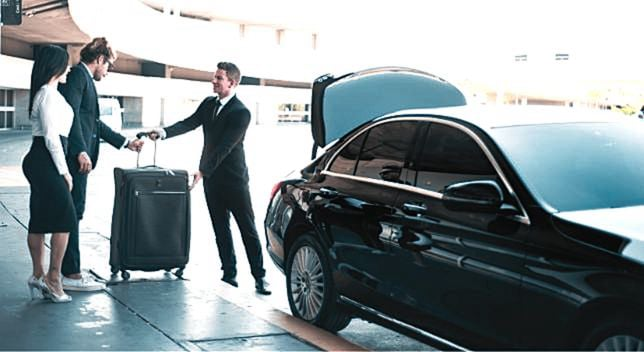

Organizing transportation for a group can be one of the most challenging aspects of planning any event or trip. Whether it is a corporate gathering, wedding celebration, sightseeing tour, airport transfer, or a night out with friends, coordinating multiple vehicles, schedules, and routes can quickly become complicated. Group travel requires careful planning to ensure everyone arrives on time, travels comfortably, and enjoys the journey together.

One solution that has become increasingly popular is using a professional limo service for group transportation. Instead of relying on several separate vehicles or unpredictable ride-sharing services, a limousine service offers a coordinated, comfortable, and stylish transportation option for groups of all sizes. With professional chauffeurs, spacious vehicles, and organized scheduling, group transportation becomes simple and stress-free.
This article explores how professional limousine services help streamline group travel, the advantages they provide, and how proper planning can ensure a smooth transportation experience for any event.
Understanding the Challenges of Group Transportation
Traveling as a group can quickly become complicated when transportation logistics are not properly planned. Coordinating multiple drivers, vehicles, and routes often leads to confusion and delays. When different people drive separately, arrival times may vary, parking can become difficult, and the group may become separated during the journey.
Another challenge involves safety and convenience. Not everyone in the group may feel comfortable driving in busy city traffic or navigating unfamiliar routes. Additionally, events such as weddings, corporate gatherings, or parties often involve tight schedules that require punctual transportation.
Professional limousine services help eliminate these challenges by providing a single, organized transportation solution. With experienced chauffeurs handling the driving and logistics, the entire group can focus on enjoying the event rather than worrying about travel arrangements.
The Comfort and Convenience of Group Limousine Travel
One of the primary benefits of booking a professional limo service for group transportation is comfort. Limousines and luxury transportation vehicles are designed to accommodate multiple passengers while providing a high level of comfort and space.
Instead of squeezing into separate cars, group members can travel together in a spacious vehicle with comfortable seating, climate control, and modern amenities. This creates a more enjoyable travel experience where passengers can relax, socialize, and prepare for the event ahead.
Convenience is another major advantage. Professional limousine services handle route planning, traffic navigation, and parking logistics. Passengers simply need to board the vehicle at the scheduled pickup location and enjoy the ride while the chauffeur takes care of the rest.
Professional Chauffeurs Enhance the Experience
The presence of a professional chauffeur is one of the key features that distinguishes limousine services from other transportation options. Chauffeurs are trained drivers who prioritize safety, punctuality, and customer service.
When transporting a group, the chauffeur ensures that the journey remains smooth and organized. They arrive on time, assist passengers when needed, and follow carefully planned routes to avoid delays. Their experience with city traffic patterns and event venues helps ensure timely arrivals and efficient travel.
Professional chauffeurs also provide a level of courtesy and professionalism that enhances the overall experience. Whether assisting with luggage for airport transfers or coordinating multiple stops during a group outing, their role contributes significantly to the success of the transportation plan.
Ideal Transportation for Weddings and Celebrations
Group limousine transportation is particularly popular for weddings and large celebrations. Wedding parties often include bridesmaids, groomsmen, family members, and close friends who all need to travel together between venues.
A limousine service allows the wedding party to travel as a group while maintaining a sense of elegance and celebration. It also ensures that everyone arrives at the ceremony, reception, and photo locations on time without the stress of coordinating multiple vehicles.
For bachelor and bachelorette parties, birthdays, anniversaries, and other celebrations, limousine transportation creates a fun and memorable experience. Traveling together allows guests to enjoy the event from the moment the journey begins.
Corporate Group Transportation Made Simple
Businesses frequently require reliable group transportation for meetings, conferences, and corporate events. Executives, employees, and visiting clients often need to travel between airports, hotels, and meeting locations efficiently.
Professional limousine services provide a practical solution for corporate group transportation. Instead of arranging separate rides, companies can transport entire teams in a coordinated manner. This improves punctuality, reduces travel stress, and creates a professional impression for clients and partners.
Corporate travelers also appreciate the comfortable and quiet environment provided by luxury vehicles. During the ride, passengers can review presentations, hold discussions, or simply relax before important meetings.
Stress-Free Airport Transfers for Groups
Airport transportation for large groups can be particularly difficult to coordinate. Flights may arrive at different times, luggage requirements vary, and navigating airport traffic can be stressful.
Using a professional limousine service for airport transfers simplifies the process significantly. Chauffeurs monitor flight schedules, adjust pickup times if necessary, and ensure that passengers are transported efficiently between the airport and their destination.
Group airport transfers are especially beneficial for business delegations, tour groups, and family vacations. Instead of arranging multiple taxis or rideshares, everyone can travel together in one organized vehicle.
Planning the Right Vehicle for Your Group
Selecting the appropriate vehicle is an important part of planning group transportation. Professional limousine services typically offer a variety of options designed to accommodate different group sizes and event types.
Smaller groups may choose luxury sedans or SUVs, while larger parties may require stretch limousines, executive vans, or party buses. Each vehicle type offers unique features that enhance the travel experience, including spacious interiors, entertainment systems, and comfortable seating arrangements.
When planning transportation, it is important to consider the number of passengers, luggage requirements, and the overall nature of the event. Working with a professional service helps ensure that the right vehicle is selected to meet the group’s needs.
Coordinating Schedules and Multiple Stops
Group travel often involves multiple stops and complex schedules. For example, a wedding party may need transportation between hotels, ceremony locations, and reception venues. Corporate groups may require transportation between conference centers, restaurants, and entertainment venues.
Professional limousine services specialize in managing these logistics. Chauffeurs follow carefully planned itineraries to ensure that each stop is completed efficiently. If schedules change during the event, transportation providers can often adjust plans to accommodate new requests.
This flexibility is particularly valuable for large events where timing is critical and coordination between different locations is essential.
Safety and Reliability for Group Travel
Safety is always a priority when organizing transportation for a group. Professional limousine services maintain strict safety standards, including vehicle inspections, driver training, and adherence to transportation regulations.
Passengers can feel confident knowing that they are traveling in well-maintained vehicles operated by experienced drivers. This level of reliability is especially important for events where punctuality and safety are critical, such as weddings, corporate meetings, or airport transfers.
By choosing a professional service, group organizers reduce the risks associated with inexperienced drivers, unfamiliar routes, and unpredictable transportation options.
Creating a Memorable Travel Experience
Transportation is often viewed simply as a way to get from one place to another. However, when planned thoughtfully, it can become an enjoyable part of the overall event experience.
Group limousine travel allows passengers to relax, celebrate, and connect with one another during the journey. Whether it is sharing laughter on the way to a celebration or discussing plans before an important meeting, the shared travel experience helps strengthen group connections.
Luxury transportation also adds a sense of style and sophistication that enhances special occasions. Arriving together in an elegant vehicle can make any event feel more memorable and exciting.
Tips for Successfully Planning Group Transportation
Effective planning plays an important role in ensuring smooth group transportation. Event organizers should begin by determining the size of the group, pickup and drop-off locations, and the schedule for the day.
Booking transportation in advance is also essential, especially during busy seasons when demand for limousine services may be high. Clear communication with the transportation provider helps ensure that all details are understood and that the vehicle and chauffeur are prepared for the event.
Providing accurate information about passenger numbers, luggage requirements, and any special requests allows the service to deliver the best possible experience.